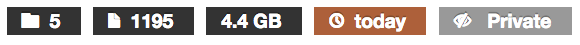

sydney-data.ammrf Quick Reference Guide¶
Contact Us¶
Contact AAMRF datastore help
Accessing sydney-data.ammrf¶
sydney-data.ammrf can be accessed with any web browser. Your data can be accessed by clicking on the login link and entering your credentials.
Browsing and Sharing Projects¶
sydney-data.ammrf organises data by Projects. Each Project contains many experiments. Each experiment gives users the ability to browse and download datafiles.
Clicking on the name of a Project will load a new page which displays descriptive information pertaining to the Project as well a list of its experiments. There are two tabs on the left: Description and Metadata.

The number of experiments and files within a Project, as well as the total size, date uploaded and access rights are displayed near the top of the page.
Description
The Description tab is loaded by default whenever a
Project is accessed through the interface and displays detailed information
about the Project. The information provided may include the institution
that ran the Project, the licensing arrangement that governs it, as well as
the Project’s administrator(s). More information (if any has been provided)
about the Project can be accessed by clicking on the  button. The Description tab also allows a Project’s experiments to be
downloaded in their entirety as a single archive by clicking on the
button.
button. The Description tab also allows a Project’s experiments to be
downloaded in their entirety as a single archive by clicking on the
button.
Metadata
The Metadata tab displays detailed metadata information about a Project if available.
Sharing Projects
The Sharing tab displays information about the people and/or groups that currently have access to the Project, and also allows users or groups to be provided with access. The tab displays the current level of access, the licence that governs the Project, and also displays a list of the individual users and groups that have been provided with access.
Levels of access to projects are as follows:
- Read: Users can view and download, but not edit metadata or add data.
- Edit: Users can view and download, and freely edit metadata and add data.
- Owner: Users have all the above permissions, and can share this project with others.
Another access mechanism is provided via temporary access links. These temporary links can be created by project owners and sent to collaborators, including ones external to the lab or institution. Temporary links provide read-only (and download) access for a single project.
{kind=link}
Accessing and Downloading Experiments¶
The names of accessible experiments are listed in the right-most pane displayed in the Project page. Experiments containing files can be accessed by clicking on the name of the relevant experiment. The number of individual files within each experiment and the total size of the experiment are displayed to the right of each entry.
Clicking on the checkbox () to the left of an experiment will select it
and allow the data to be downloaded by clicking on the  button. The text box above the experiment list can be used to filter experiments by
title.
button. The text box above the experiment list can be used to filter experiments by
title.
Downloading Experiments
Experiments can be viewed by clicking on their title in the Project page. The files in an experiment will be displayed on the right-hand side of the page and descriptive metadata will be displayed on the left. If the experiment contains image data, previews will be displayed on the left. Clicking on a preview image will display the image at a larger resolution.
{kind=link}
The files in an experiment can be viewed in the browser, with 100 files for each
page appearing by default. They can be downloaded either as a single archive
(via ) or individually (via the  button next to each
file). Clicking on the checkbox to the left of a file will select it and allow
the data to be downloaded by clicking on the
button next to each
file). Clicking on the checkbox to the left of a file will select it and allow
the data to be downloaded by clicking on the  button. The text
box above the file list can be used to filter files by name. Clicking on the
button. The text
box above the file list can be used to filter files by name. Clicking on the
 button will display details about the image including any
metadata. Large preview images for files can be selected and viewed by
clicking on the small thumbnail of the relevant image under each file.
button will display details about the image including any
metadata. Large preview images for files can be selected and viewed by
clicking on the small thumbnail of the relevant image under each file.